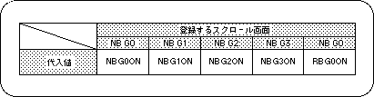

Return to previous page | Return to menu | Go to next page
The line color screen is a special scroll surface that is prepared only for the purpose of color calculation by forcibly inserting it as the second image of the top image (the image that is actually drawn on the monitor) of the specified scroll surface.
On the line color screen, the color can be set for the entire screen or for each line.
A set of color color RAM address data used for each line must be stored in the VRAM area as a line color table.
Caution
For details on the line color screen, refer to “HARDWARE MANUAL vol.2: VDP2 User's Manual Line Screen”.
To use the line color screen, you need to take the following steps:
1) Line color screen settings
When using the line color screen, you must first specify the line color table that stores the line color data.
Also, remember to store the color data specified by the line color table in the color RAM area.
Use the function “slLine1ColSet” if you want to use a single line color screen.
2) Scroll surface registration
Next, register the scroll plane affected by the line color screen.
Use the function “slLineColDisp” to register the scroll plane.

Note) The values in the above table are defined in “sl_def.h” included with the system.
3) Color operation using line color screen
By using the scroll plane that has been registered with the function “slLineColDisp” together with the color calculation processing settings described above, color calculation processing using line color images can be executed.
For details on color calculation processing, see “Color Calculation” in the previous section.